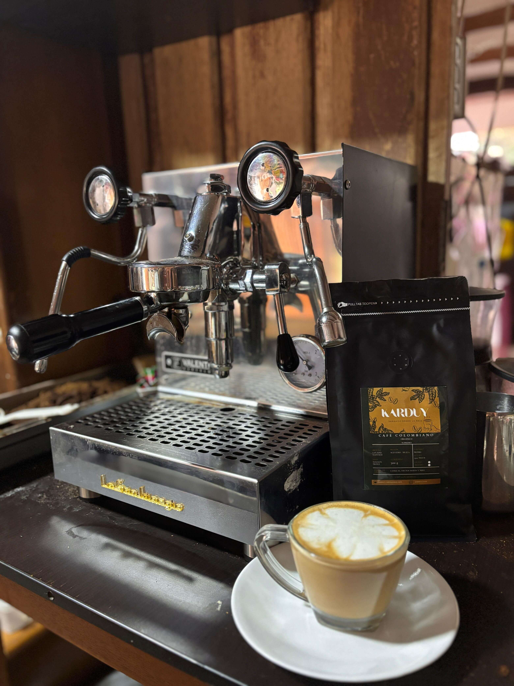
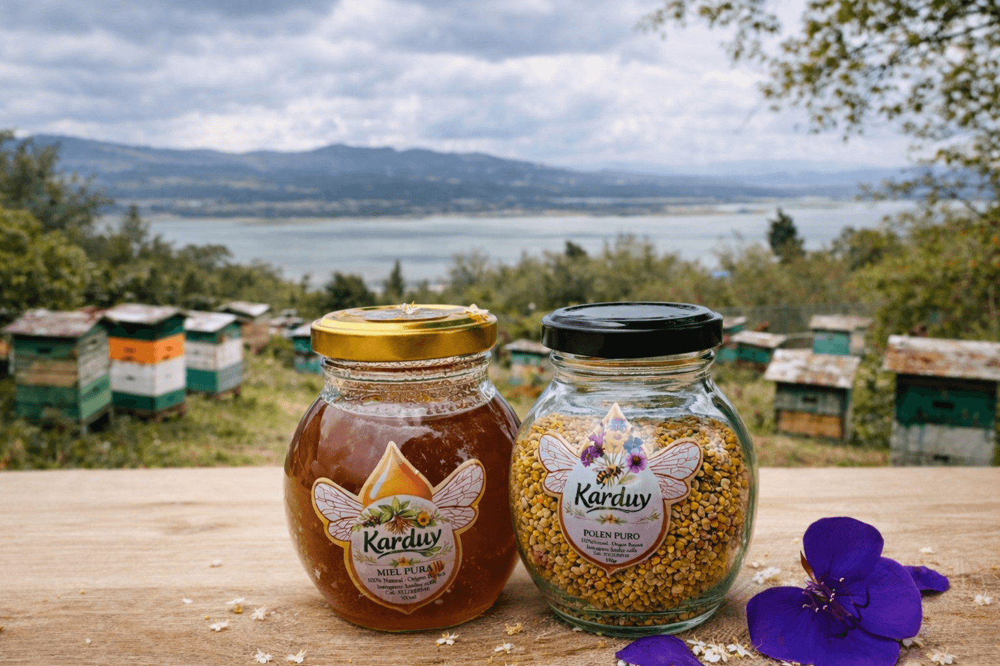
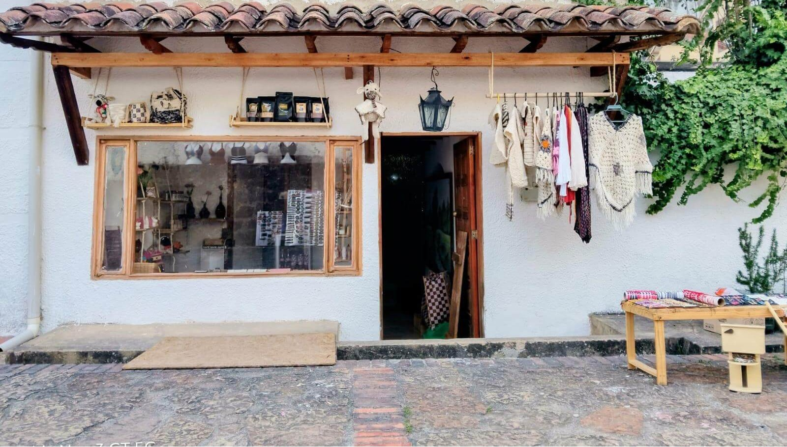

Nuestra Historia
🌱 Sanando desde la raíz
KARDUY nace del amor por la tierra y la convicción de que la verdadera sanación es natural. Es un compromiso con el bienestar integral a través de tesoros que la naturaleza nos brinda.
🍫 Nuestro Legado: El Cacao
Nuestro producto insignia tiene un aroma especial. Se cultiva con respeto en el municipio de San Pablo de Borbur, Boyacá, directamente en la finca de nuestros abuelos.
Es allí donde nuestras raíces cobran vida, transformando la herencia familiar en un propósito que llega a tu mesa.

Café de Origen
Acevedo, Huila

Energía Vital
Miel y Polen Boyacense
🏡 Bienestar para el hogar
Desde Guatavita, transformamos y empacamos cada producto cuidando cada detalle para conservar sus propiedades naturales. Extendemos nuestro cuidado al hogar con nuestra línea artesanal de velas y jabones botánicos.
📍 Te esperamos en nuestra casa

Donde la tradición se encuentra con el bienestar.